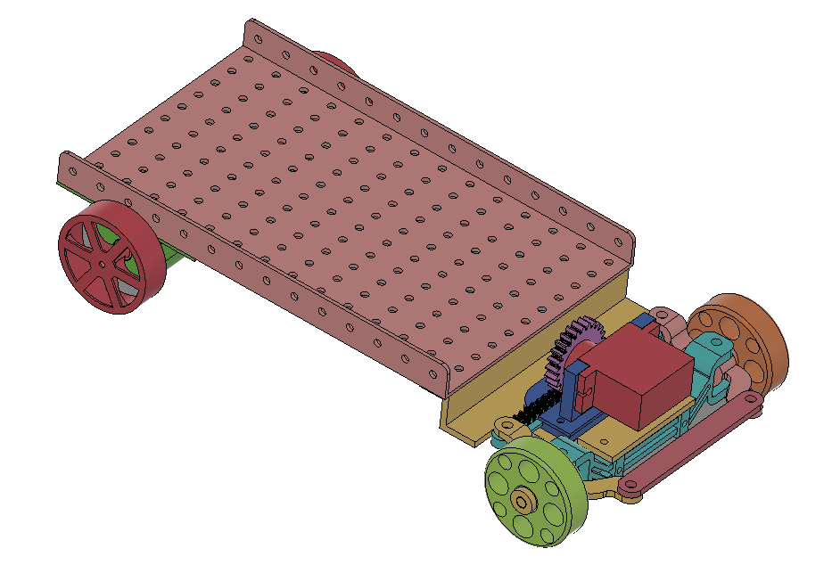
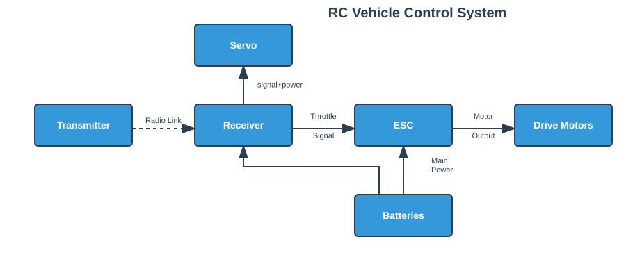

"Resourcefulness promotes creativity — an exercise to remember."

Built from scavenged scrap — code-named after the Wombles, who famously make good use of things left behind. A hands-on introduction to RC vehicle electronics, motor control, and chassis design, built entirely from what was already there.
Most engineers reach for the good parts first. A proper chassis, the right motors, a clean PCB. But early in a project, that's often the wrong move — you're spending on answers to questions you haven't asked yet. And beyond the cost, there's the turnaround: waiting for parts, waiting for the 3D printer, waiting for delivery. Every wait pulls you out of the creative flow, and by the time the parts arrive, the thinking has gone cold.
A junior designer once asked me how to improve his 3D printed prototypes. My answer: Made them in cardboard.
There's something that only a physical object gives you — even a rough one. CAD is powerful, but it's easy to build false confidence in a model: arrangements that look resolved on screen but don't hold up in space, or designs that stall because you're trying to figure out parts you haven't made yet. A scrap prototype cuts through that. It's tangible, immediate, and honest. It doesn't need to be finished — it needs to be real enough to be wrong. That's the point. The prototype is the trigger, not the output. Your first feasibility check shouldn't be a render — it should be something you can hold.
WombleBot was that same principle applied deliberately. RC control was a domain I wanted to explore — and rather than buying a kit and following instructions, I wanted to find out for myself what actually makes a car move and steer. Scrap parts, fast failure, no shortcuts.
The constraint wasn't a limitation. It was the method.
No kit. No budget. Just a pile of things that were already there.
The full bill of materials:
Total cost: approximately the price of a coffee.

The CAD was minimal — the chassis uses a Meccano-style pattern so parts could shift as the build evolved. Printed from scavenged filament, assembled with whatever held.
See it run. First lap, fully manual RC control — and a fitting end for a car built from scrap.
 ▶
▶
The control system follows a straightforward signal chain. A standard RC transmitter sends two signals wirelessly to the receiver onboard the car — one for throttle, one for steering.
The throttle signal goes to the ESC (Electronic Speed Controller), which translates it into regulated power from the batteries to the drive motors. The steering signal goes directly to the servo, which handles the front wheel direction mechanically.
That's it. No microcontroller, no code. The simplicity was deliberate — the goal was to understand the fundamentals of RC control with the fewest possible layers in between.

The most honest measure of a prototype is what it surprises you with.
Before WombleBot, I had never paired a transmitter and receiver — the radio control side was entirely new territory. Working through it hands-on, including designing the servo gear adapter and understanding how front steering geometry actually translates signal into movement, was more instructive than any tutorial.
I also learned there are two fundamentally different approaches to steering an RC vehicle — front wheel steering and tank drive. WombleBot uses front steering, which meant thinking about geometry, servo throw, and linkage in a way tank drive simply doesn't require. That distinction only became real once something physical existed to steer.
But the two biggest surprises were simpler than any of that. First — how easy it was to connect everything. The signal chain from transmitter to ESC to motor is remarkably straightforward once you stop overthinking it. Second — the 20-year-old batteries worked. Voltage was visibly off, the motors felt it, but the car moved. That alone confirmed the point: you need less than you think to test whether something works.
WombleBot wasn't the destination — the approach is. The next build is a deliberate step up.
The prototype told you what the design needed. The next version builds it properly.
Looking to work on systems that move, sense, and respond.